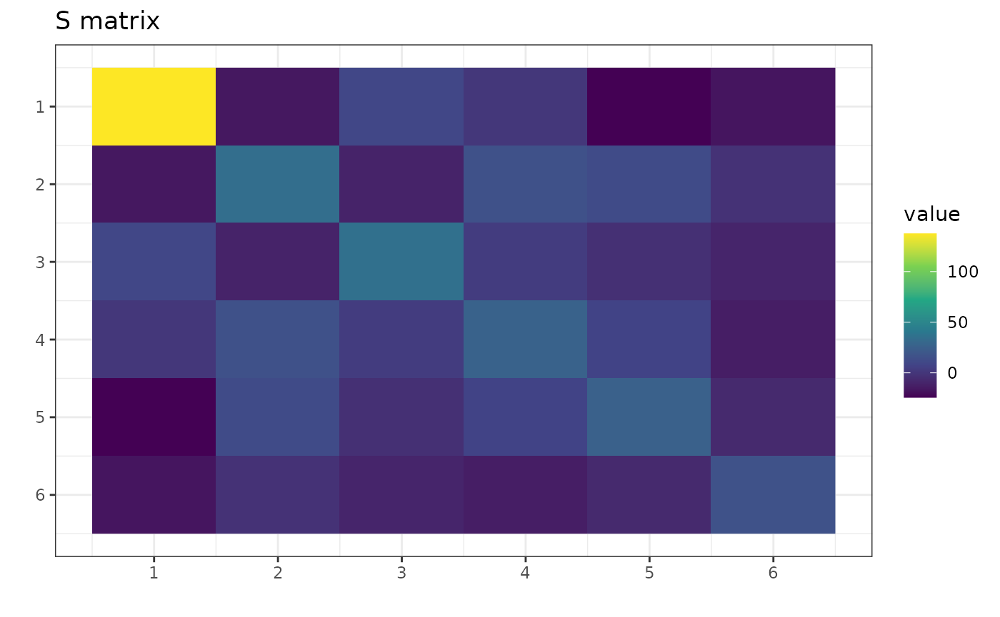
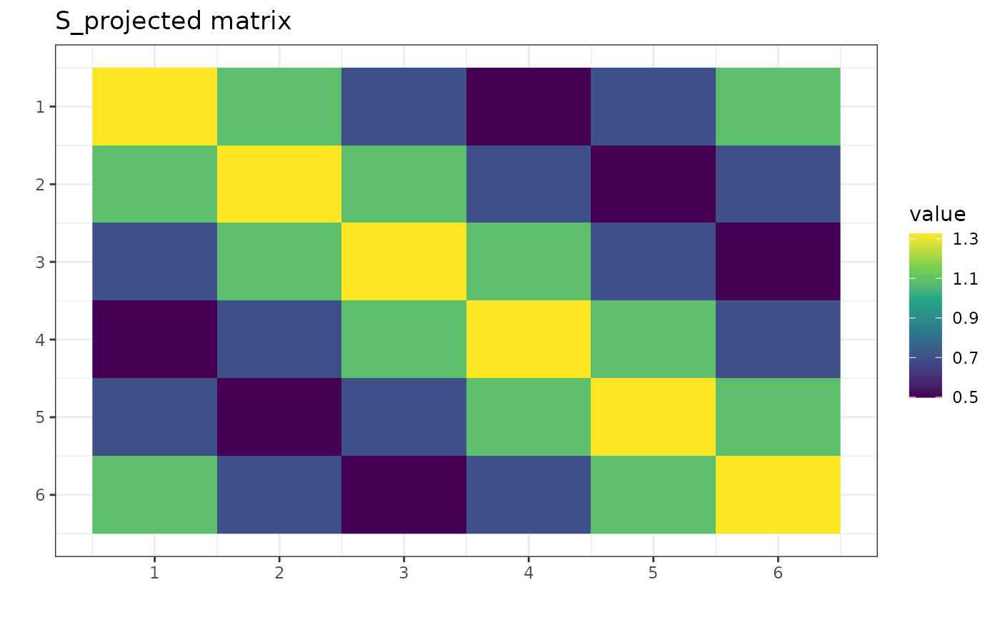

Theory the gips is based on
The package is based on the article [1]. There the math behind the package is precisely demonstrated, and all the theorems are proven.
In this vignette, we would like to give a gentle introduction. We
want to point out all the most important results from this work from the
user’s point of view. We will also show examples of those results in the
gips package.
As mentioned in the abstract, the outline of the paper is to “derive
the distribution of the maximum likelihood estimate of the covariance
parameter \(\Sigma\) (…)” and then to
“perform Bayesian model selection in the class of complete Gaussian
models invariant by the action of a subgroup of the symmetric group
(…)”. Those ideas are implemented in the gips package.
Basic definitions
Let \(V=\{1,\ldots,p\}\) be a finite index set, and for every \(i\in \{1, \dots, n\}\), \(Z^{(i)}=(Z_1^{(i)},\ldots, Z_p^{(i)})^\top\) be a multivariate random variable following a centered Gaussian model \(\mathrm{N}_p(0,\Sigma)\), and let \(Z^{(1)},\ldots, Z^{(n)}\) be an i.i.d. (independent and identically distributed) sample from this distribution. Name the whole sample \(Z = (Z^{(1)},\ldots, Z^{(n)})\).
Let \(\mathfrak{S}_p\) denote the symmetric group on \(V\), that is, the set of all permutations on \(\{1,\ldots,p\}\) with function composition as the group operation. Let \(\Gamma\) be an arbitrary subgroup of \(\mathfrak{S}_p\). The model \(\mathrm{N}_p(0,\Sigma)\) is said to be invariant under the action of \(\Gamma\) if for all \(g\in \Gamma\), \(g\cdot\Sigma\cdot g^\top=\Sigma\) (here, we identify a permutation \(g\) with its permutation matrix).
For a subgroup \(\Gamma \subset \mathfrak{S}_p\), we define the colored space, i.e. the space of symmetric matrices invariant under \(\Gamma\), \[\mathcal{Z}_{\Gamma} := \{S \in \mathrm{Sym}(p;\mathbb{R})\colon S_{i,j} = S_{\sigma(i),\sigma(j)} \text{ for all }\sigma \in \Gamma\mbox{ for all }i,j\in V\},\] and the colored cone of positive definite matrices valued in \(\mathcal{Z}_{\Gamma}\), \[\mathcal{P}_{\Gamma} := \mathcal{Z}_{\Gamma} \cap \mathrm{Sym}^+(p;\mathbb{R}).\]
Block Decomposition - [1], Theorem 1
The main theoretical result in this theory (Theorem 1 in [1]) states that given a permutation subgroup \(\Gamma\) there exists an orthogonal matrix \(U_\Gamma\) such that all the symmetric matrices \(S\in\mathcal{Z}_\Gamma\) can be transformed into block-diagonal form.
The exact form of blocks depends on so-called structure
constants \((k_i,d_i,r_i)_{i=1}^L\). It is worth
pointing out that constants \(k = d\)
for cyclic group \(\Gamma =
\left<\sigma\right>\) and that gips searches
within cyclic subgroups only.
Examples
p <- 6
S <- matrix(c(1.1,0.9,0.8,0.7,0.8,0.9,
0.9,1.1,0.9,0.8,0.7,0.8,
0.8,0.9,1.1,0.9,0.8,0.7,
0.7,0.8,0.9,1.1,0.9,0.8,
0.8,0.7,0.8,0.9,1.1,0.9,
0.9,0.8,0.7,0.8,0.9,1.1), nrow = p)
S is a symmetric matrix invariant under the group \(\Gamma =
\left<(1,2,3,4,5,6)\right>\).
g_perm <- gips_perm("(1,2,3,4,5,6)", p)
U_Gamma <- prepare_orthogonal_matrix(g_perm)
block_decomposition <- t(U_Gamma) %*% S %*% U_Gamma
round(block_decomposition, 5)
#> [,1] [,2] [,3] [,4] [,5] [,6]
#> [1,] 5.2 0.0 0.0 0.0 0.0 0.0
#> [2,] 0.0 0.5 0.0 0.0 0.0 0.0
#> [3,] 0.0 0.0 0.5 0.0 0.0 0.0
#> [4,] 0.0 0.0 0.0 0.1 0.0 0.0
#> [5,] 0.0 0.0 0.0 0.0 0.1 0.0
#> [6,] 0.0 0.0 0.0 0.0 0.0 0.2The transformed matrix is in the block-diagonal form of [1], Theorem 1. Blank entries are off-block entries and equal to 0. Notice that, for example, the [2,3] is not blank regardless of being 0. This is because it is a part of the block-diagonal form but happens to have a value of 0.
The result was rounded to the 5th place after the decimal to hide the inaccuracies of floating point arithmetic.
Let’s see the other example:
p <- 6
S <- matrix(c(1.2,0.9,0.9,0.4,0.2,0.1,
0.9,1.2,0.9,0.1,0.4,0.2,
0.9,0.9,1.2,0.2,0.1,0.4,
0.4,0.1,0.2,1.2,0.9,0.9,
0.2,0.4,0.1,0.9,1.2,0.9,
0.1,0.2,0.4,0.9,0.9,1.2), nrow = p)Now, S is a symmetric matrix invariant under the group
\(\Gamma =
\left<(1,2,3)(4,5,6)\right>\).
g_perm <- gips_perm("(1,2,3)(4,5,6)", p)
U_Gamma <- prepare_orthogonal_matrix(g_perm)
block_decomposition <- t(U_Gamma) %*% S %*% U_Gamma
round(block_decomposition, 5)
#> [,1] [,2] [,3] [,4] [,5] [,6]
#> [1,] 3.0 0.7 0.0000 0.0000 0.0000 0.0000
#> [2,] 0.7 3.0 0.0000 0.0000 0.0000 0.0000
#> [3,] 0.0 0.0 0.3000 0.0000 0.2500 0.0866
#> [4,] 0.0 0.0 0.0000 0.3000 -0.0866 0.2500
#> [5,] 0.0 0.0 0.2500 -0.0866 0.3000 0.0000
#> [6,] 0.0 0.0 0.0866 0.2500 0.0000 0.3000Again, this result is in accordance with [1], Theorem 1. Notice the
zeros in block_decomposition: \[\forall_{i\in\{1,2\},j\in\{3,4,5,6\}}\text{block_decomposition}[i,j]
= 0\]
Project Matrix - [1, Eq. (6)]
One can also take any symmetric square matrix S and find
the orthogonal projection on \(\mathcal{Z}_{\Gamma}\), the space of
matrices invariant under the given permutation:
\[\pi_\Gamma(S) := \frac{1}{|\Gamma|}\sum_{\sigma\in\Gamma}\sigma\cdot S\cdot\sigma^\top\]
The projected matrix is the element of the cone \(\pi_\Gamma(S)\in\mathcal{Z}_{\Gamma}\), which means: \[\forall_{i,j\in \{1,\ \dots,\ p\}} \pi_\Gamma(S)[i,j] = \pi_\Gamma(S)[\sigma(i),\sigma(j)] \text{ for all }\sigma\in\Gamma\]
So it has some identical elements.
Trivial case
Note that for \(\Gamma = \{\text{id}\} = \{(1)(2)\dots(p)\}\) we have \(\pi_{\{\text{id}\}}(S) = S\).
So, no additional assumptions are made; thus the standard covariance estimator is the best we can do.
Example
Let S be any symmetric square matrix:
round(S, 2)
#> [,1] [,2] [,3] [,4] [,5] [,6]
#> [1,] 137.51 -16.21 10.03 0.16 -24.35 -17.42
#> [2,] -16.21 34.08 -10.62 15.93 12.23 -2.74
#> [3,] 10.03 -10.62 35.47 3.10 -3.81 -9.60
#> [4,] 0.16 15.93 3.10 26.74 7.71 -13.51
#> [5,] -24.35 12.23 -3.81 7.71 26.00 -7.24
#> [6,] -17.42 -2.74 -9.60 -13.51 -7.24 16.77
One can project this matrix, for example, on \(\Gamma = \left<(1,2)(3,4,5,6)\right>\):
S_projected <- project_matrix(S, perm = "(1,2)(3,4,5,6)")
round(S_projected, 2)
#> [,1] [,2] [,3] [,4] [,5] [,6]
#> [1,] 85.80 -16.21 -0.28 -3.91 -0.28 -3.91
#> [2,] -16.21 85.80 -3.91 -0.28 -3.91 -0.28
#> [3,] -0.28 -3.91 26.25 -1.51 -8.66 -1.51
#> [4,] -3.91 -0.28 -1.51 26.25 -1.51 -8.66
#> [5,] -0.28 -3.91 -8.66 -1.51 26.25 -1.51
#> [6,] -3.91 -0.28 -1.51 -8.66 -1.51 26.25Notice in the S_projected matrix, there are identical
elements according to the equation from the beginning of this section.
For example, S_projected[1,1] = S_projected[2,2].
\(C_\sigma\) and
n0
It is a well-known fact that without additional assumptions, the Maximum Likelihood Estimator (MLE) of the covariance matrix in the Gaussian model exists if and only if \(n \ge p\). However, if the additional assumption is added as the covariance matrix is invariant under permutation \(\sigma\), then the sample size \(n\) required for the MLE to exist is lower than \(p\). It is equal to the number of cycles, denoted hereafter by \(C_\sigma\).
For example, if the permutation \(\sigma =
(1,2,3,4,5,6)\) is discovered by the find_MAP()
function, then there is a single cycle in it \(C_\sigma = 1\). Therefore a single
observation would be enough to estimate a covariance matrix with
project_matrix(). If the permutation \(\sigma = (1,2)(3,4,5,6)\) is discovered,
then \(C_\sigma = 2\) and so 2
observations would be enough.
To get this \(C_\sigma\) number in
gips, one can call summary() on the
appropriate gips object:
g1 <- gips(S, n, perm = "(1,2,3,4,5,6)", was_mean_estimated = FALSE)
summary(g1)$n0
#> [1] 1
g2 <- gips(S, n, perm = "(1,2)(3,4,5,6)", was_mean_estimated = FALSE)
summary(g2)$n0
#> [1] 2This is called n0 and not \(C_\sigma\), because it is increased by 1
when the mean was estimated:
Bayesian model selection
When one has the data matrix Z, one would like to know
if it has a hidden structure of dependencies between features. Luckily,
the paper demonstrates a way how to find it.
General workflow
- Choose the prior distribution on \(\Gamma\) and \(\Sigma\).
- Calculate the posteriori distribution (up to a normalizing constant) by formula [1], (30).
- Use the Metropolis-Hastings algorithm to find the permutation with the biggest value of the posterior probability \(\mathbb{P}(\Gamma|Z)\).
Details on the prior distribution
The considered prior distribution of \(\Gamma\) and \(K=\Sigma^{-1}\):
- \(\Gamma\) is uniformly distributed on the set of all cyclic subgroups of \(\mathfrak{S}_p\).
-
\(K\) given \(\Gamma\) follows the Diaconis-Ylvisaker
conjugate prior distribution with parameters \(\delta\) (real number, \(\delta > 1\)) and \(D\) (symmetric, positive definite square
matrix of the same size as
S), see [1], Sec. 3.4.
Footnote: Actually, for \(\Gamma =
\{id\}\), \(\delta > 0\)
parameter are theoretically correct. In gips we want this
to be defined for all cyclic groups \(\Gamma\), so we restrict \(\delta > 1\). Refer to the [1].
gips technical details
In gips, \(\delta\) is
named delta, and \(D\) is
named D_matrix. By default, they are set to \(3\) and diag(p), respectively.
However, it is worth running the procedure for several parameters
D_matrix of form \(d\cdot
diag(p)\) for positive constant \(d\). Large \(d\) (compared to the data) favors small
structures.
One can calculate the logarithm of formula (30) with function
log_posteriori_of_gips().
Interpretation
When all assumptions are met, the formula (30) puts a number on each permutation’s cyclic group. The bigger its value, the more likely the data was drawn from that model.
When one finds the permutations group \(c_{\text{max}}\) that maximizes (30), \[c_{\text{map}} = \operatorname{arg\,max}_{c\in\mathfrak{S}_p} \mathbb{P}\left(\Gamma=c|Z^{(1)},\ldots,Z^{(n)}\right)\]
one can reasonably assume the data \(Z\) was drawn from the model \[\mathrm{N}_p(0,\pi_{c_{\text{map}}}(S))\]
where \(S = \frac{1}{n} \sum_{i=1}^n Z^{(i)}\cdot {Z^{(i)}}^\top\)
In such a case, we call \(c_{\text{map}}\) the Maximum A Posteri (MAP).
Finding the MAP Estimator
The space of all permutations is enormous for bigger \(p\) (in our experiments, \(p\ge 9\) is too big). In such a big space, it is more reasonable to estimate the MAP than to calculate it precisely.
Metropolis-Hastings algorithm suggested by the authors of [1] is a natural way to do
it. To see the discussion on it and other options available in
gips, see
vignette("Optimizers", package="gips") or its pkgdown
page.
Example
Let’s say we have this data, Z. It has only \(4\) observations, and its dimension is
\(p=6\). Let’s assume Z
was drawn from the normal distribution with the mean \((0,0,0,0,0,0)\). We want to estimate the
covariance matrix:
dim(Z)
#> [1] 4 6
number_of_observations <- nrow(Z) # 4
p <- ncol(Z) # 6
# Calculate the covariance matrix from the data (assume the mean is 0):
S <- (t(Z) %*% Z) / number_of_observations
# Make the gips object out of data:
g <- gips(S, number_of_observations, was_mean_estimated = FALSE)
g_map <- find_MAP(g, optimizer = "brute_force")
#> ================================================================================
print(g_map)
#> The permutation (1,2,3,4,5,6):
#> - was found after 720 posteriori calculations;
#> - is 513.723 times more likely than the starting, () permutation.
S_projected <- project_matrix(S, g_map[[1]])
We see the posterior probability [1,(30)] has the biggest
value for the permutation \((1,2,3,4,5,6)\). It was over 500 times
bigger than for the trivial \(\text{id} =
(1)(2)\ldots(p)\) permutation. We interpret that under the
assumptions (centered Gaussian), it is over 500 times more reasonable to
assume the data Z was drawn from model \(\mathrm{N}_p(0,\text{S_projected})\) than
from model \(\mathrm{N}_p(0,\text{S})\).
Information Criterion - AIC and BIC
One may be interested in Akaike’s An Information Criterion (AIC) or Schwarz’s Bayesian Information Criterion (BIC) of the found model. Those are defined as follows:
\[\log L\left(\hat{K}; Z^{(1)},\ldots,Z^{(n)}\right) = \sum_{i=1}^n \left(- \frac{p}{2}\log (2\pi) - \frac{1}{2}\log\left( \det\left( \hat{K}\right)\right) - \frac12 {Z^{(i)}}^\top \hat{K}^{-1} Z^{(i)}\right)= \]
\[- \frac{np}{2}\log (2\pi) - \frac{n}{2}\log\left( \det\left( \hat{K}\right)\right) - \frac{n}2\mathrm{tr}(\hat{K}^{-1} S),\] where \(S = \frac{1}{n} \sum_{i=1}^n Z^{(i)}\cdot {Z^{(i)}}^\top\).
Further, for every \(c\) we have \(\mathrm{tr}(\pi_{c}(S)^{-1} \cdot S) = p\), so:
\[\log L\left(\pi_{c}(S); Z^{(1)},\ldots,Z^{(n)}\right) = - \frac{np}{2}\log (2\pi) - \frac{n}{2}\log\left( \det\left( \pi_{c}(S)\right)\right) - \frac{np}2\]
Which can be calculated by logLik.gips().
Then AIC and BIC are defined by:
\[AIC = 2 \cdot (\dim M) -2 \log L(\hat K)\] \[BIC = (\log n) \cdot (\dim M) -2 \log L(\hat K)\]
The interpretation is as follows: the smaller the criterion, the better the model.
Those can be calculated by AIC.gips() and
BIC.gips().
Estimated mean
When the mean was estimated, we have \(S = \frac{1}{n-1} \sum_{i=1}^n (Z^{(i)} - \bar{Z})\cdot ({Z^{(i)} - \bar{Z})}^\top\), where \(\bar{Z} = \frac{1}{n} \sum_{i=1}^n Z^{(i)}\). Then:
\[\log L_{estimated\ mean}\left(\pi_{c}(S); Z^{(1)},\ldots,Z^{(n)}\right) = - \frac{(n-1)\cdot p}{2}\log (2\pi) - \frac{(n-1)}{2}\log\left( \det\left( \pi_{c}(S)\right)\right) - \frac{(n-1)\cdot p}2\]
And definitions of AIC and BIC stay the same:
\[AIC = 2 \cdot (\dim M) -2 \log L_{estimated\ mean}(\hat K)\] \[BIC = (\log n) \cdot (\dim M) -2 \log L_{estimated\ mean}(\hat K)\]
Example
Consider example similar to one in Bayesian model selection section:
Let’s say we have this data, Z. It has \(7\) observations, and its dimension is
\(p=6\). Let’s assume Z
was drawn from the normal distribution with the mean \((0,0,0,0,0,0)\). We want to estimate the
covariance matrix:
dim(Z)
#> [1] 7 6
number_of_observations <- nrow(Z) # 7
p <- ncol(Z) # 6
S <- (t(Z) %*% Z) / number_of_observations
g <- gips(S, number_of_observations, was_mean_estimated = FALSE)
g_map <- find_MAP(g, optimizer = "brute_force")
#> ================================================================================
AIC(g)
#> [1] 64.19906
AIC(g_map) # this is smaller, so this is better
#> [1] 62.99751
BIC(g)
#> [1] 63.06318
BIC(g_map) # this is smaller, so this is better
#> [1] 62.78115We will consider g_map better model both in terms of the
AIC and the BIC.
References
[1] Piotr Graczyk, Hideyuki Ishi, Bartosz Kołodziejek, Hélène Massam. “Model selection in the space of Gaussian models invariant by symmetry.” The Annals of Statistics, 50(3) 1747-1774 June 2022. arXiv link; DOI: 10.1214/22-AOS2174